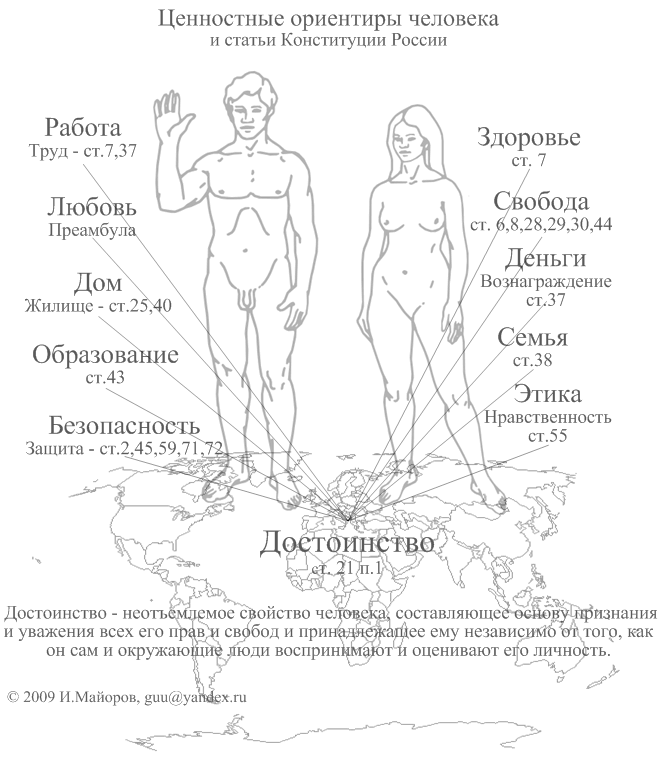

|
Кризисы движения социальной материи
Я иду к своему 60-летию, а День Победы к своему 65-летию. Может от этого эти майские праздничные дни 2009 года я больше смотрел телевизор. В эти Дни памяти и примирения мне захотелось в художественных образах увидеть осмысление истоков, причин и целей военных столкновений. Новый фильм Петра Тодоровского о войне Риорита предупреждает, что после разрушения ценностей человека и в частности ценности семьи рушатся страны. Так рухнул Древний Рим после разрушения сельской семьи, пополнявших легионы римлян. Мобилизационное развитие России и Германии, организованное политическими партиями в прошлом веке, залило кровью Европу. Это талантливо показано в фильме Николая Досталя "Штрафбат". После его просмотра мне представляется, что история потому и отказывается от суждений, что с течением времени стороны любых противоборств оказываются правыми и виноватыми в равной степени. Цели не имеют большого значения, а устойчивое развитие важнее и требует своего дальнейшего обоснования. Целеустремлённое развитие теперешних стран привело к кризису. Возможно, надо остановиться всем народам и ещё раз сосредоточится на своих ценностях. И ,например, запретить законом лидерам и политическим партиям гнать людей к любым целям. Такая резолюция от ООН была бы крайне полезна сегодня. Завтра может быть поздно. Интересно, что Генеральная Ассамблея ООН в резолюции № A/RES/59/26 от 22 ноября 2004 года, посвящённой празднованию шестидесятилетия окончания Второй мировой войны провозгласила 8 и 9 мая Днями памяти и примирения и начиная с 2005 года ежегодно рекомендует отмечать, кроме национальных Дней Победы и Освобождения, один или оба эти дня как дань памяти всем жертвам Второй мировой войны. Это разумно, народам нет дела до побед их лидеров. Сталин провозгласил эти дни праздником Победы, потом отменил этот день как нерабочий. Может и он не в состоянии был в этот день праздновать. Мудрее вспоминать павших, чем праздновать и чествовать ветеранов. Конечно, павших практически невозможно было сосчитать: проще хлопать в ладоши ветеранам, но от этого много меняется в ценностях человека, народа. Может победы в войнах надо как-то иначе называть и отмечать. Жертвы от военных конфликтов прибавляются и сегодня. Нет сил, не хватает денег для предотвращения войн, а явный пробел в знаниях социологии войны обозначен ещё в докладе О СОЦИОЛОГИЧЕСКОМ ИЗУЧЕНИИ ВОЙНЫ, сделанным русским учёным Н.Н. Головиным на XII Международном конгрессе по социологии в Брюсселе 26 августа 1935 году. В докладе говорилось, что науки, изучающей войну не с точки зрения военного искусства, а исследующей ее как особое явление социальной жизни, еще нет. Наш соотечественник мечтал: «Я вполне сознаю, какие трудности сопряжены с учреждением специального научного института для социологического научного изучения войны, однако верю, что человечество рано или поздно придет к тому. Пока же я позволю себе высказать более скромное пожелание: об учреждении кафедры по «Социологии войны». В своей книге Социология войны, 1997 российский военный учёный В,В.Серебрянников пишет: «Свой вклад в научное понимание этих и многих других вопросов о войне должна внести и военная социология. Она призвана объяснить место и роль войны в системе социальных отношений, ее специфику как особого вида отношений между людьми, различными социальными общностями, государствами. Особенно важно правильно понять позицию различных социальных систем, институтов и организаций, классов, социальных групп по отношению к войне, выявить ее "социальных родителей". До сих пор остается по сути неисследованным влияние войны на эволюцию социальной сферы и политическую систему общества. Большие проблемы перед военной социологией стоят и в связи с военной реформой в России. Без понимания характера общества, которое строится в стране, социальной структуры и отношений между социальными общностями, социально-политических источников войн, эволюции самой войны, невозможно выработать обоснованную военную доктрину, концепцию военной реформы и иметь взвешенную военную политику.. Наконец-то после нескольких десятилетий после речи Н.Н.Головина в декабре 2002 года была создана Кафедра социологии безопасности на социологическом факультете Московского государственного университета в связи с возросшей потребностью в безопасности в условиях радикальных геополитических, геоэкономических и геокультурных изменений в мире на рубеже веков.. Однако как отмечают А.П.Цыганков, П.А.Цыганков в своём учебнике Социология международных отношений, 2006 года: «… стратегические исследования находятся сегодня в состоянии кризиса. Он связан прежде всего с тем, что до сих пор не удалось выработать адекватного нынешним условиям понятия войны, существующие же ее определения, хотя отчасти и сохраняют некоторую операциональность, все же не могут служить эффективным инструментом анализа новых явлений в данной сфере социального взаимодействия, …постепенно крепнет признание того, что в силу наблюдаемых в мировой политике тенденций маловероятно, что в обозримом будущем человечеству удастся освободиться от войн как способа разрешения конфликтов между участниками политического процесса. Ченловечество продолжает строить свои отношения путём проб и ошибок. И наша текущая цивилизация построена таким путем, а начало её приходится по версии историка Ярослава Шимова на 8-9 мая 1945 года : «1945 год стал точкой отсчета истории той цивилизации, в которой мы живем сегодня. При всех ее явных минусах это цивилизация, в которой права человека признаются в качестве ценности, хотя бы формально, абсолютным большинством. Ни один диктаторский режим, критикуемый за нарушения прав своих граждан, не осмеливается отрицать саму необходимость соблюдения этих прав, не провозглашает себя приверженцем качественно иной системы ценностей.». Свою посильную помощь в понимание социологии войны внесла Русская Православная Церковь, Основы социальной концепции, глава VIII. Война и мир, Часть 1: «Война является физическим проявлением скрытого духовного недуга человечества - братоубийственной ненависти (Быт. 4. 3-12). Войны сопровождали всю историю человечества после грехопадения и, по слову Евангелия, будут сопровождать ее и далее: "Когда же услышите о войнах и о военных слухах, не ужасайтесь: ибо надлежит сему быть" (Мк. 13:7). Об этом свидетельствует и Апокалипсис, повествуя о последней битве сил добра и зла при горе Армагеддон (Откр. 16:16). Земные войны суть отражение брани небесной, будучи порождены гордыней и противлением воле Божией. Поврежденный грехом человек оказался вовлечен в стихию этой брани. Война есть зло. Причина его, как и зла в человеке вообще, - греховное злоупотребление богоданной свободой, "ибо из сердца исходят злые помыслы: убийства, прелюбодеяния, любодеяния, кражи, лжесвидетельства, хуления" (Мф. 5. 19).. Учитывая и осмысливая все эти загадки войны и мира мне представляется, что наша действующая Конституция, провозгласившая общечеловеческие ценности приоритетом общества, создаёт тем самым удобную систему координат на основе достоинства человека. На мой взгляд, графически это удачно отражено здесь.  И если ценностно-ориентированного человека гонят целеориентированные политики в будущее, то такой человек может превратиться в такое дерьмо, что его и за человека трудно потом воспринять и ещё труднее нормальному человеку такое существо судить.Рискну предположить, что такими целеориентированными политиками были практически все лидеры ХХ века, объективно подошедшие к развязыванию войны (достижение цели иными, насильственными способами) для установления нового мирового порядка, реализуя цели фашизма или борясь с ним. И если народы создадут обновлённое лидерство и законодательно запретят устанавливать глобальные цели, то это был бы разумный шаг. Но для этого нужна целая наука, новая ценностно-ориентированная социология управления с решением локальных целей личного или местного характера вместо теперешней целеориентированной политики современных государств с игнорированием ценностей человека. А пока в книге Мир наизнанку, 2009 года подготовленной двумя известными экономистами-экспертами Делягиным М.Г. и Шеяновым В.В. на вопрос «Чем закончится экономический кризис для России?» они отвечают, что в ходе Хотелось бы верить, однако наши союзники в той войне - американцы отмечают самый близкий к российскому Дню Победы - Мемориальный день в последний понедельник мая. В этот день американцы вспоминают всех, кто погиб, защищая свою страну. Официальная часть праздника проходит в Вашингтоне, где президент США по традиции приветствует собравшихся патриотической речью и возлагает цветы к могиле Неизвестного солдата. Да и побеждённые в той войне народы осмыслили свои неудачи и новыми законами и традициями создали вполне приемлемые цивилизации на основе достоинства, прав и свобод человека. Может и нам в России надо в эти дни обращаться к чувствам и смыслам примирения и впредь чествовать только погибших. Рукоплескания на праздники и парады победы могут подтолкнуть нас только к новым войнам и помешать подготовиться к новым социальным потрясениям. Б.И.Майоров. 15 мая 2009 года |